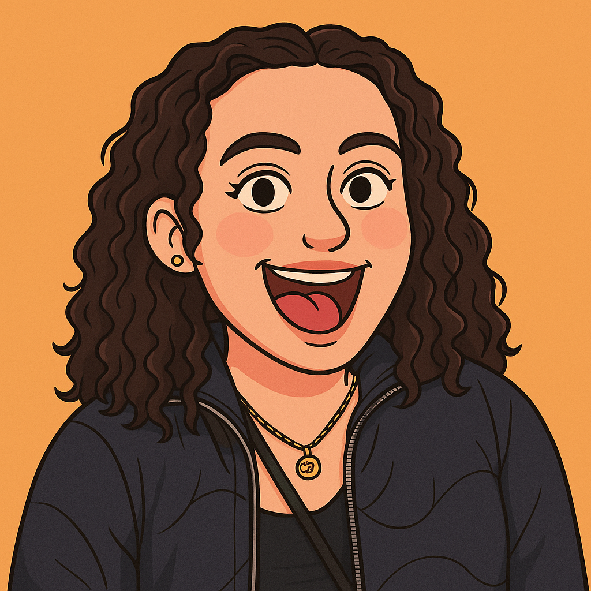

My name is Sydne Wiederspan, and I am a Graphic Designer with a bachelor's degree in Game Art from Rocky Mountain College of Art and Design. I have spent the past three years working as a graphic designer at Big Frog Custom T-Shirts in Denver, CO where I was born and raised. I have recently relocated to Nashville, TN, and look forward to advancing my career as a young designer in this new chapter of my life.
Traveling and exploring new cultures and cuisines is my greatest passion in life. I am lucky enough that my boyfriend is a pilot, and gives me so many opportunities to explore along with him. When I'm not traveling, I enjoy reading fantasy books and running; I completed my first half marathon this year. My dog Taz is also a big part of my life and always brings me joy at the end of my days.
I have also spent most of my life riding horses competitively. My heart horse, Roka, whom I met just before graduating high school, was my companion until her sudden passing at the end of 2022. Navigating life without her has been challenging, but now that it has been a few years, I've taken the lessons I learned during my time with her and used them to shape my career and life.
{kind=link}